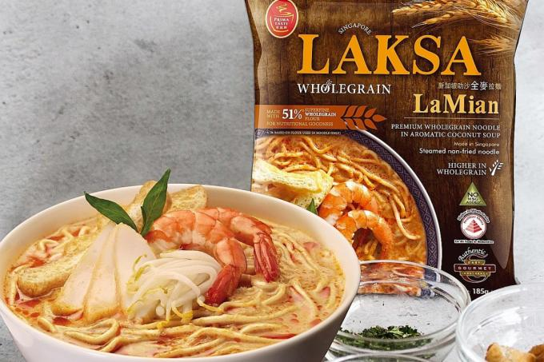
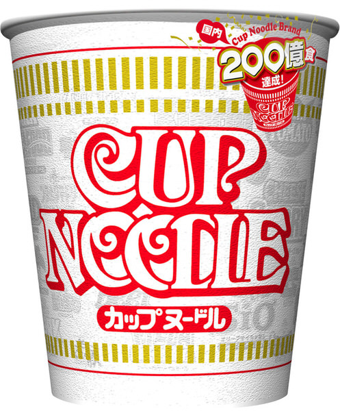

Ramens with the best taste would bring us the best mood of the day! It’s time to discover the top-rated ramens and make them on your next menu no matter you are busy or not!
 Image from: tnp Package of Prime Taste Wholegrain Laksa LaMian
The table below shows the NO.1 Ramen rated on the RAMEN RATER in different years.
| Brand | Name | Style | Country | year |
|---|---|---|---|---|
| Prima Taste | Wholegrain Laksa LaMian | Pack | Singapore | 2022 |
| Prima Taste | Wholegrain Laksa LaMian | Pack | Singapore | 2021 |
| Prima Taste | Wholegrain Laksa LaMian | Pack | Singapore | 2020 |
| Prima Taste | Wholegrain Laksa LaMian | Pack | Singapore | 2019 |
| Prima Taste | Singapore Laksa Wholegrain La Mian | Pack | Singapore | 2016 |
| MyKuali | Penang Red Tom Yum Goong Noodle | Pack | Malaysia | 2015 |
| MyKuali | Penang White Curry Noodle | Pack | Malaysia | 2014 |
| Prima Taste | Singapore Laksa La Mian | Pack | Singapore | 2013 |
| Indomie | Special Fried Curly Noodle | Pack | Indonesia | 2012 |
Singapore clearly wins the game, but what about the performance of the ramens from other countries? We have picked out all ramens that ranking from 4-5, to see where do our top-rated ramens from:
From this bargraph, we did see that you are very hard to get an unsatisfied ramen! Wihle we also see that Japan, Taiwan, South Korea and Mainland China are in the list, these countries/regions shared a long history of comsuming Ramen, which proved that practice makes the best.
More importantly, let’s inspect the performance of different brands.
Below shows the distribution of our top-rated ramen between different brands, point to different areas to see the number of top-rated ramen they have!
This chart only annotated the brands that has more than 10 ramens on the list. Nissin is outstanding among the brands. Which may due to its long history starts from 1950’s and the fantastic tastes.

Image from: NISSIN Group Classic cup noodel from Nissin